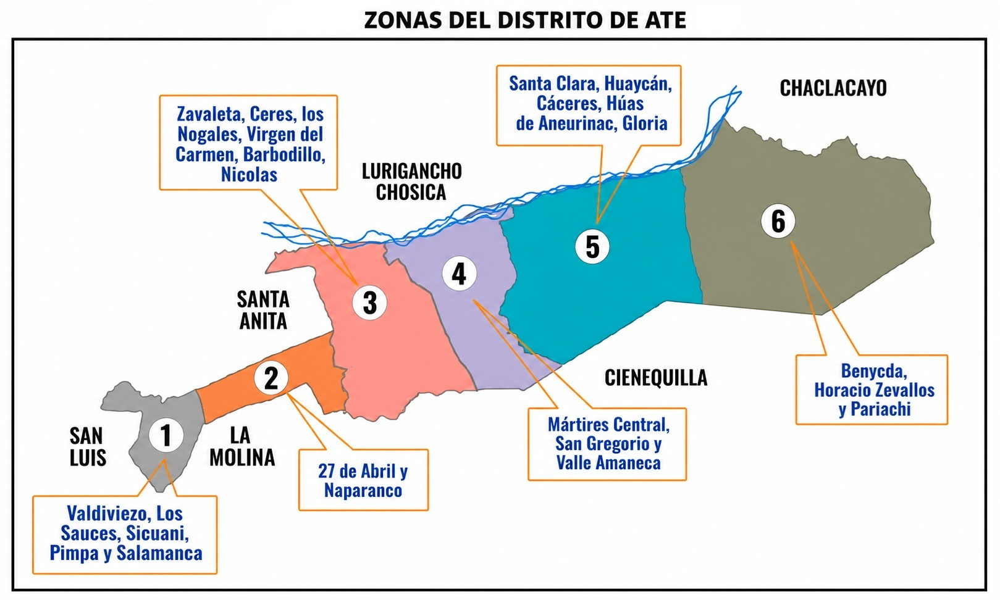

Robos, inseguridad y falta de control en calles donde el vecino debería sentirse protegido.
El vecino se cuida solo. Y eso es inaceptable.Salvemos al Perú - Ate
Ate se desordenó. Nosotros lo vamos a poner en su sitio.
Basta de inseguridad, obras mal hechas y autoridades ausentes.
Los problemas de Ate no son nuevos. Lo nuevo es que ya no los vamos a tolerar.

Obras deficientes y falta de planificación en un distrito que necesita crecer con orden.
El problema no es que no se haga obra, es que se hace mal.Trámites lentos, mala gestión y una atención que no resuelve lo que la gente necesita.
El problema es una gestión que no funciona.Causa
Esto no es casualidad. Es mala gestión
Cuando la autoridad desaparece, el desorden avanza. Ate no está así por mala suerte. Está así porque los que gobernaron no supieron ordenar, supervisar ni ejecutar.
Propuesta
Venimos a poner orden
Seguridad
- Control territorial
- Patrullaje permanente
- Cámaras útiles
- Coordinación con la Policía
Obras
- Supervisión técnica
- Control de calidad
- Prioridad real por zonas
- Obras que sirvan y duren
Gestión
- Trámites rápidos
- Digitalización municipal
- Atención eficiente
- Menos demora, más respuesta
Desarrollo
- Orden del comercio
- Apoyo a emprendedores
- Más oportunidades locales
- Movimiento económico real
Menos discurso. Más orden, más gestión y resultados que se vean en la calle.
Diferencial
No somos políticos, somos ejecutores
No venimos a administrar excusas. Venimos a ordenar la casa, cumplir metas y hacer que la gestión municipal vuelva a servirle al vecino.
Contraste
Los mismos de siempre ya fallaron
Más promesas no van a arreglar Ate. Más de lo mismo solo va a dejar más inseguridad, más desorden y más frustración.
Consulta
Documentos y resultados para revisar de frente
Participación ciudadana
La calle también decide
Si quieres orden, seguridad y una municipalidad que funcione, este es el momento de sumarte.
Decisión
O seguimos igual o cambiamos de verdad
Ate no necesita otro discurso. Necesita autoridad, orden y una gestión que se haga respetar.